I am a software developer based out of Rotterdam, NL.
Currently, I am developing geospatial tools for precision agriculture at Aurea Imaging. My educational background is in hydrology, water management and remote sensing.
I enjoy gardening, throwing pots and 3D printing in my free time.
